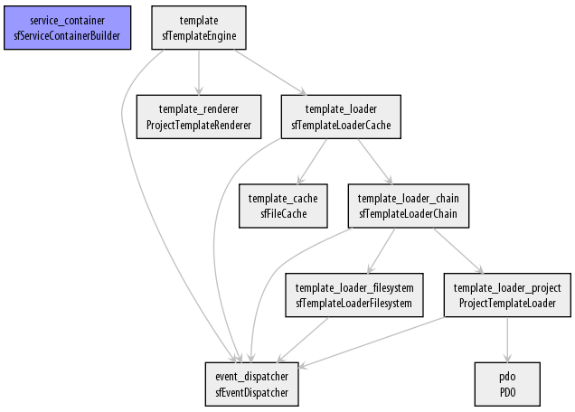

Ce tutoriel vise à vous faire découvrir un modèle de gestion du cycle de vie des objets parfois méconnu des développeurs, particulièrement en PHP. Après une présentation du concept d'injection de dépendances, deux bibliothèques écrites en PHP seront présentées afin de permettre une utilisation facile dans vos scripts.
Le pré-requis de ce tutoriel est une bonne connaissance de PHP et une maîtrise de la programmation orientée objet (introduite dans le tutoriel officiel PHP et approfondie dans ce tutoriel). Une curiosité et une ouverture d'esprit sont aussi nécessaires pour aller au bout du tutoriel et comprendre l'intérêt du patron de conception que je vais vous présenter.
Notez que si les codes sont tous écrits en PHP, la théorie est facilement transposable dans d'autres langages. Les codes sont compréhensibles pour toute personne maîtrisant la POO dans n'importe quel langage (Java, C++, etc.).
Avant toute chose, il faut savoir que l'injection de dépendances s'inscrit dans un contexte de programmation orientée objet (POO pour les intimes) et que par conséquent le concept n'est que de peu d'utilité dans un langage ne permettant pas la POO ou bien si vous n'exploitez pas ses possibilités.
Présentation du problème
Comme tout design pattern qui se respecte, l'injection de dépendances (en anglais dependency injection, abrégé DI) est une réponse à un problème. Afin de le présenter, je vais prendre un exemple d'utilisation concret.
L'idée de départ est d'offrir une persistance des données entre deux pages chargées par un même utilisateur ; on a pour cela deux solutions dans toute application web : utiliser des cookies ou les sessions. Dans un contexte objet, vous serez amenés à écrire des classes afin de gérer cette persistance. La classe la plus naturelle est une classe de stockage fournissant un code objet pour manipuler les sessions PHP.
<?php
class SessionStorage
{
function __construct($cookieName = 'PHP_SESS_ID')
{
session_name($cookieName);
session_start();
}
function set($key, $value)
{
$_SESSION[$key] = $value;
}
function get($key)
{
return $_SESSION[$key];
}
// ...
}
Cependant il n'est pas très confortable de manipuler cet objet directement et vous préférerez utiliser un objet plus haut niveau représentant un utilisateur.
<?php
class User
{
protected $storage;
function __construct()
{
$this->storage = new SessionStorage();
}
function setAttribute($name, $value)
{
$this->storage->set($name, $value);
}
function getAttribute($name)
{
return $this->storage->get($name);
}
// ...
}
Cela fonctionne bien mais manque cruellement de flexibilité. Par exemple, si vous voulez changer le nom du cookie contenant l'id de la session, comment faites-vous ?
Solution 1 : coder la valeur en dur
La première solution qui viendra est de coder la valeur en dur dans le constructeur de la classe User.
<?php
class User
{
function __construct()
{
$this->storage = new SessionStorage('SESSION_ID');
}
// ...
}
On voit tout de suite que si on veut changer cette valeur à l'avenir, cela nécessite de changer le code. Vu que la classe SessionStorage accepte la valeur en paramètre dans son constructeur, c'est donc qu'elle est capable de s'adapter quel que soit le nom du cookie. Il est donc dommage que la classe User ne puisse pas être configurée plus facilement.
Solution 2 : utiliser une constante
L'avantage par rapport à la situation précédente est que la constante est définie en dehors de la classe et donc qu'il est toujours possible de centraliser la configuration dans un seul fichier définissant toutes les constantes de configuration.
<?php
class User
{
function __construct()
{
$this->storage = new SessionStorage(STORAGE_SESSION_NAME);
}
// ...
}
define('STORAGE_SESSION_NAME', 'SESSION_ID');
Cependant la solution n'est toujours pas idéale vu que la classe dépend maintenant d'une constante pour fonctionner correctement. Même bien documentée, cette utilisation est rapidement source d'erreurs.
Solution 3 : ajouter un argument au constructeur
De même que la classe de gestion de session a un argument à son constructeur, on peut faire de même pour l'utilisateur.
<?php
class User
{
function __construct($sessionName)
{
$this->storage = new SessionStorage($sessionName);
}
// ...
}
$user = new User('SESSION_ID');
Une fois de plus ce n'est pas optimal puisqu'on encombre le constructeur avec des options n'ayant rien à voir avec la classe elle-même.
Une solution
Vous aurez aussi peut-être remarqué un autre problème : comment changer facilement le stockage des sessions ? Même si utiliser les sessions natives de PHP est souvent la meilleure solution, surtout pour de petits sites, il y a des cas où d'autres solutions doivent être envisagées (stockage des données persistantes en base de données par exemple). Dans ce dernier cas, une classe DatabaseStorage sera écrite, mais il faudra alors une fois de plus changer le code du constructeur de User... Pas terrible.
Une solution (il y en a sans doute d'autres, mais c'est celle qui est exploitée dans le design pattern que je souhaite vous présenter) est de passer l'instance de la classe de stockage en argument au constructeur de la classe de l'utilisateur (on dit qu'on injecte une classe dans une autre).
<?php
class User
{
function __construct($storage)
{
$this->storage = $storage;
}
// ...
}
$storage = new SessionStorage('SESSION_ID');
$user = new User($storage);
Si vous découvrez ce patron de conception, il y a des chances que vous soyez déçus comme je l'ai été la première fois que j'ai vu l'explication. Cependant malgré le fait que l'idée de base soit triviale (vous y aviez peut-être pensé avant que je ne dévoile la solution), sa mise en œuvre devient vite très complexe, surtout dans un environnement orienté objet dense. La création d'un objet devient alors rapidement un calvaire lorsque vous devez auparavant créer cinq autres classes, elles-mêmes dépendant d'autres classes, etc. De plus, vous aurez remarqué que vous n'y gagnez pas nécessairement en facilité de configuration si vous exploitez ce modèle tel quel. C'est tout l'objet des parties qui vont suivre.
En réalité, la vraie force de l'injection de dépendances vient de l'écosystème qui l'accompagne. Chaque langage fournit des bibliothèques permettant de l'utiliser très facilement. Dans un premier temps, nous allons voir comment utiliser concrètement ce que nous avons vu dans la partie précédente avec un simple code PHP (sans bibliothèque).
Notre premier conteneur
Cela passe par la notion de conteneur (en anglais depdendency injection container, abrégé DIC). C'est un objet qui sait comment construire d'autres objets. Ces objets sont ensuite généralement appelés des services (le dénomination n'est pas spécifique au DIC). En reprenant l'exemple de la section précédente, une telle classe s'écrit très simplement.
<?php
class Container
{
public function getUser()
{
return new User($this->getUserStorage());
}
public function getUserStorage()
{
return new SessionStorage('SESSION_ID');
}
}
$container = new Container();
Ainsi à partir de votre objet $container, vous pouvez construire à n'importe quel moment une instance de la classe User. La configuration est centralisée au sein de cette classe, et vous pouvez aisément modifier un nom de classe ou un paramètre en modifiant cette classe.
La seule difficulté à laquelle vous pourrez être confrontés est de garder votre instance accessible partout. Pour cela plusieurs remèdes sont possibles. Le cas idéal est une bonne conception objet qui permet d'injecter le conteneur (eh oui !) dans d'autres objets (par exemple des contrôleurs). Si cela n'est pas possible (par exemple si vous utilisez beaucoup de fonctions ou méthodes statiques) une autre solution est d'implémenter un singleton sur votre conteneur.
Partager les services
Le code actuel comporte un petit désagrément : à chaque récupération de service, un nouveau service est créé. Le comportement peut être pratique dans certains cas, mais de façon générale vous préférez éviter de créer un nouvel utilisateur à chaque fois que vous voulez accéder à une valeur de session. Heureusement on corrige très facilement ce problème en n'instanciant qu'une seule fois chaque service. Plusieurs solutions sont possibles, en voici une.
<?php
class Container
{
public function getUser()
{
static $instance;
if (!isset($instance))
{
$instance = new User($this->getUserStorage());
}
return $instance;
}
public function getUserStorage()
{
static $instance;
if (!isset($instance))
{
$instance = new SessionStorage('SESSION_ID');
}
return $instance;
}
}
Ainsi, le premier appel de $container->getUser() construira un utilisateur (et donc l'objet gérant le stockage des données persistantes). Les appels suivants retourneront toujours le même utilisateur, ce qui est bien le comportement souhaité. Attention à toujours n'instancier qu'un seul conteneur ! Le conteneur ne pouvant s'instancier lui-même pour des raisons évidentes, c'est au développeur d'y faire attention.
Paramétrer les services
Le paramétrage de nos services nécessite toujours de modifier le code de la classe. C'est pourquoi les DIC sont généralement paramétrables facilement. Le plus simple est de gérer une liste de paramètres qui seront accessibles dans les méthodes de construction. Ces paramètres sont typiquement passés au conteneur lors de son instanciation.
<?php
class Container
{
protected $parameters;
public function __construct(array $parameters)
{
$this->parameters = $parameters;
}
public function getUserStorage()
{
static $instance;
if (!isset($instance))
{
$instance = new SessionStorage($this->parameters['user.storage.cookie_name']);
}
return $instance;
}
//...
}
Une bonne pratique (utilisée dans Symfony) pour éviter les collisions de paramètres est d'utiliser une notation à point(s) afin de repérer facilement à quel service se rattache chaque paramètre. Pour faire encore plus fort (et c'est là que le DIC révèle tout son potentiel !), il est possible de paramétrer de même le nom de la classe :
<?php
class Container
{
protected $parameters;
public function getUserStorage()
{
static $instance;
if (!isset($instance))
{
$className = $this->parameters['user.storage.class'];
$instance = new $className($this->parameters['user.storage.cookie_name']);
}
return $instance;
}
//...
}
C'est particulièrement utile dans le cas présenté, afin de passer facilement d'un stockage en session à un stockage en base de données par exemple. Deux remarques :
il est plus confortable de gérer des valeurs par défaut pour les paramètres : dans la majorité des cas, la classe SessionStorage sera utilisée et ne pas devoir systématiquement la nommer explicitement est un plus ;
l'utilisation des interfaces montre alors tout son intérêt quand on utilise un DIC. Cela permet de ne pas se soucier des implémentations mais juste des méthodes disponibles dans tout code utilisant des objets extraits d'un conteneur.
On pourrait évidemment appliquer le même traitement à la méthode Container::getUser(). Même si dans le cas d'un utilisateur, spécifier la classe pourrait à première vue présenter moins d'intérêt, cela reste très utile dans un contexte d'héritage. Symfony utilise par exemple abusivement ce principe afin de permettre de personnaliser chaque classe utilisée dans le framework. Il suffit alors de créer une classe personnalisée héritant de la classe de base, de changer un paramètre (tout est paramétré) et le tour est joué !
Visibilité des services
Certains services n'ont pas besoin d'être accessibles depuis n'importe quel morceau de code. Par exemple ici, notre service user.storage est uniquement destiné à être injecté dans notre service d'utilisateur et n'a pas vocation à être manipulé seul. Lui mettre une visibilité non publique est alors une bonne idée afin de prévenir une maladresse d'un développeur.
Notez que cela ne l'empêche pas d'être réutilisé pour la construction d'autres classes. Avec notre conteneur actuel, il suffit de remplacer le mot clé public par protected ou private.
Récapitulatif
Voici le code complet à la fin de cette partie :
<?php
class Container
{
protected $parameters;
public function __construct(array $parameters)
{
$this->parameters = $parameters;
}
public function getUser()
{
static $instance;
if (!isset($instance))
{
$className = $this->parameters['user.class'];
$instance = new $className($this->getUserStorage());
}
return $instance;
}
protected function getUserStorage()
{
static $instance;
if (!isset($instance))
{
$className = $this->parameters['user.storage.class'];
$instance = new $className($this->parameters['user.storage.cookie_name']);
}
return $instance;
}
}
Le code que nous avons écrit précédemment marche correctement mais vous aurez constaté qu'il est très répétitif et qu'au delà de quelques classes (une dizaine) le maintenir peut rapidement devenir cauchemardesque. Nous allons donc découvrir rapidement quelques bibliothèques PHP permettant de gérer ses dépendances facilement. Si vous n'appréciez ni le framework symfony/Symfony ni son créateur Fabien Potencier, je vous conseille de passer immédiatement votre chemin : toutes les bibliothèques qui suivent proviennent soit de l'un, soit de l'autre !
À l'origine de Pimple : Twittee
Pour l'anecdote, Pimple ressemble quelque peu à Twittee. Twittee est un défi (délire ?) consistant à faire tenir un DIC dans un tweet (140 caractères). Je vous laisse admirer le résultat (PHP 5.3 ou plus requis) :
<?php
class Container {
protected $s = array();
function __set($k, $c) { $this->s[$k] = $c; }
function __get($k) { return $this->s[$k]($this); }
}
Vous aurez remarqué que ce code ne fait au final pas grand chose de plus qu'un simple tableau en PHP. Mais strictement parlant, c'est bien un DIC ! Son utilisation exploite ensuite les fonctions anonymes de PHP, comme suit.
<?php
$c = new Container();
$c->user_storage_name = 'SESSION_ID';
$c->user_storage = function($c) { return new SessionStorage($c->user_storage_name); };
$c->user = function($c) { return new User($c->user_storage); };
PS : si certains ont encore des doutes, non Twittee n'a pas vocation à être utilisé réellement !
Introduction à Pimple
La parenthèse culturelle étant faite, laissez-moi vous présenter Pimple. Bien qu'il comporte heureusement quelques fonctionnalités en plus par rapport à Twittee, sa conception a aussi été guidée par la simplicité. Contrairement à son petit frère, il est utilisable en pratique (le micro-framework Silex le fait). Pour télécharger Pimple, une adresse : son site officiel. Vous pouvez aussi visiter directement son dépôt GitHub.
Si j'ai choisi Pimple comme premier exemple, c'est qu'il introduit la plupart des notions évoquées dans la partie précédente. Tout comme Twittee, il exploite les fonctions anonymes introduites en PHP 5.3.
Définir des paramètres
Pour définir des paramètres, il suffit de manipuler une instance de Pimple comme un simple tableau.
Notez qu'il est aussi possible de définir des paramètres plus complexes reposant sur le résultat d'une fonction (par exemple un appel à rand()). Dans ce cas vous devez protéger le paramètre comme suit (la raison de cette protection est l'implémentation faite dans Pimple des paramètres et des services) :
Les services sont définis de façon similaire aux paramètres, toujours en manipulant le conteneur comme un tableau.
<?php
$container['user'] = function($c){
return new $c['user.class']($c['user.storage']);
};
$container['user.storage'] = function($c){
return new $c['user.storage.class']($c['user.storage.cookie_name']);
};
Les fonctions anonymes définissant des services reçoivent toujours en premier et unique argument l'instance du conteneur dans son état courant (contrairement à une fonction anonyme définissant un paramètre, d'où la nécessité de protéger ces dernières !).
Remarquez bien que services et paramètres sont gérés de la même façon, ce qui implique qu'un paramètre et un service ne peuvent avoir le même nom. Les services sont ensuite récupérés comme les paramètres en demandant simplement la bonne clé dans le « tableau » (une exception est levée en cas de clé invalide) :
<?php
$user = $container['user'];
Lorsqu'on souhaite ensuite accéder à un service, Pimple se contente d'exécuter la fonction anonyme définie. Cela signifie que par défaut, un nouveau service est recréé à chaque appel. Pour éviter cela, Pimple fournit un raccourci afin de partager un service :
<?php
$container['user'] = $container->share(function($c){
return new $c['user.class']($c['user.storage']);
});
$container['user.storage'] = $container->share(function($c){
return new $c['user.storage.class']($c['user.storage.cookie_name']);
});
Notez pour finir qu'il n'est pas possible de changer la visibilité d'un service, ils sont tous publics.
Réutilisation d'un conteneur
La construction d'un conteneur se fait ici de façon dynamique. Il est possible, afin de faciliter la réutilisation d'un DIC, de le faire de façon statique en définissant une nouvelle classe étendant celle de Pimple. Les avantages sont de clarifier le code et simplifier la définition des services.
<?php
class Container extends Pimple
{
public function __construct()
{
$this['user.class'] = 'User';
$this['user.storage.class'] = 'SessionStorage';
$this['user.storage.cookie_name'] = 'SESSION_ID';
$this['user'] = $this->share(function($c){
return new $c['user.class']($c['user.storage']);
});
$this['user.storage'] = $this->share(function($c){
return new $c['user.storage.class']($c['user.storage.cookie_name']);
});
}
}
Le conteneur peut ensuite être utilisé directement après instanciation...
<?php
$container = new Container();
//Le conteneur reste paramétrable et modifiable au besoin
$container['user.storage.cookie_name'] = 'OTHER_SESSION_ID';
//Récupération du service d'utilisateur
$user = $container['user'];
... ou bien embarqué dans un autre conteneur.
<?php
$container = new Pimple();
$container['embedded'] = $container->share(function(){ return new Container() });
$user = $container['embedded']['user'];
Pour terminer notre introduction aux DIC, nous allons maintenant étudier une « vraie » bibliothèque fournissant beaucoup plus de possibilités que Pimple. Il s'agit du Symfony Dependency Injection Component. C'est une bibliothèque écrite par Fabien Potencier du temps de symfony1 et donc compatible avec PHP 5.2.
Avant toute chose, pensez à enregistrer l'autoloader du composant afin d'éviter de devoir inclure les fichiers avant chaque utilisation :
La première classe importante du composant est le sfServiceContainer qui est similaire à Pimple (quoique plus complète). Cette classe implémente l'interface sfServiceContainerInterface que je vais reproduire ici.
<?php
interface sfServiceContainerInterface
{
public function setParameters(array $parameters);
public function addParameters(array $parameters);
public function getParameters();
public function getParameter($name);
public function setParameter($name, $value);
public function hasParameter($name);
public function setService($id, $service);
public function getService($id);
public function hasService($name);
}
Ici le conteneur ne se manipule plus comme un tableau mais avec des méthodes plus classiques. On retrouve la manipulation des paramètres et des services. Je ne détaillerai pas plus car je trouve les noms de méthodes suffisamment explicites. Si vous souhaitez en savoir plus, je vous renvoie à la page de documentation en parlant.
Définition des services
J'en viens maintenant à ce qui constitue le point fort du composant : la définition des services. En effet, en plus de fournir une implémentation d'un conteneur dans la classe sfServiceContainer, il fournit une classe sfServiceContainerBuilder très pratique. Il est utile de noter que sfServiceContainerBuilder implémente sfServiceContainerInterface et que par conséquent ce n'est qu'une extension d'un conteneur simple.
Contrairement à Pimple où la démarche de construction et de configuration de l'objet était faite entièrement par le développeur à l'intérieur de la fonction anonyme, cette nouvelle classe permet de construire nos services de façon plus descriptive. Cela revient à indiquer une recette de cuisine à la classe qui se chargera ensuite de la transformer en instructions PHP au moment de créer l'objet.
<?php
$container = new sfServiceContainerBuilder();
//Ajout des paramètres de façon classique
$container->addParameters(array(
'user.class' => 'User',
'user.storage.class' => 'SessionStorage',
'user.storage.cookie_name' => 'SESSION_ID',
));
//Définition du service « user »
$container
->register('user', '%user.class%')
->addArgument(new sfServiceReference('user.storage'))
;
//Définition du service « user.storage »
$container
->register('user.storage', '%user.storage.class%')
->addArgument('%user.storage.cookie_name%')
->setShared(false)
;
La première méthode à appeler pour enregistrer un service est toujours sfServiceContainerBuilder::register() avec en premier paramètre le nom du service et en second paramètre le nom de la classe. Diverses méthodes sont ensuite appelables sur l'objet qui est renvoyé (il est possible de les chainer entre elles) :
addArgument : ajoute un argument lors de l'appel du constructeur (l'ordre des arguments est l'ordre de définition via addArgument()) ;
setArguments : définit tous les arguments du constructeur en une seule fois ;
setConstructor : définit une méthode statique servant de constructeur à la place de l'utilisation de l'opérateur new (utile dans le cas de l'emploi du patron factory) ;
setShared : définit si le service est partagé (oui par défaut) ou non ;
setFile : indique un fichier à inclure avant d'instancier le classe (utile si elle n'utilise pas l'autoload) ;
addMethodCall : définit une méthode de l'objet à appeler juste après son instanciation afin d'achever sa configuration. Le premier argument est le nom de la méthode, le second un tableau d'arguments à transmettre. Les méthodes sont appelés dans le même ordre que leur définition ;
setMethodCalls : définit plusieurs appels de méthodes en une seule fois ;
setConfigurator : définit une fonction ou méthode statique à appeler après l'instanciation de l'objet et l'appel de toutes les méthodes définies.
Pour toutes ces méthodes il est possible de donner des arguments provenant de types de base de PHP (entier, chaine de caractères, ...). En plus, vous pouvez indiquer une référence à un paramètre en entourant son nom avec deux symboles pourcentage %. Les références à des services se font elles en fournissant une instance de sfServiceReference (l'argument du constructeur étant le nom du service référencé).
Définition des services en YAML
La définition des services précédentes ressemble au final fortement à celle proposée par Pimple, si ce n'est que l'abstraction est plus grande. Pourquoi s'embêter à apprendre cette syntaxe alors me direz-vous ? Parce que le meilleur arrive ! En effet, vous pouvez décrire vos services de façon bien moins verbeuse qu'en PHP à l'aide du format YAML. Peut-être ne connaissez-vous pas ce format, peu utilisé en PHP, auquel cas je vous invite avant à prendre connaissance avec sa syntaxe sur son site officiel ou bien dans la documentation de cet autre composant. YAML est comme JSON destiné avant tout à la manipulation de tableaux.
Notez que pour utiliser ce format, vous aurez besoin du composant sfYaml pour parser ces fichiers. Je vous invite à le télécharger et à rendre disponible la classe sfYaml qu'il contient en l'incluant.
Vous pouvez ensuite remplacer toute la configuration précédente par le code YAML suivant, strictement équivalent.
Tout ce qui est configurable en PHP l'est également en YAML, je vous renvoie à la documentation officielle pour en savoir plus. Grâce à la concision du YAML, nous gagnons en lisibilité et en maintenabilité. Le chargement d'une telle configuration dans notre DIC se fait ensuite très facilement :
<?php
$loader = new sfServiceContainerLoaderFileYaml($container);
$loader->load('/chemin/vers/la/configuration.yml');
C'est à mon sens ce qui fait la force d'un tel composant par rapport à Pimple sur un gros projet. La configuration des services est aisée grâce à la centralisation des paramètres. Changer le nom du cookie de session ou le type de persistance de session est alors redoutablement simple : nous avons maintenant répondu à nos problématiques initiales !
Pour aller plus loin
Le composant décrit sommairement ici fournit encore plus de fonctionnalités ! Vous pouvez par exemple utiliser le format XML pour décrire vos services à la place du YAML. J'ai présenté le YAML car j'aime beaucoup ce format pour sa concision et son élégance. Cependant le XML offre d'autres avantages :
il est plus utilisé et donc mieux intégré dans les IDE ;
il autorise une validation de son contenu via un schéma inclus dans le composant présenté ;
il est plus rapide car intégré de base dans PHP alors que YAML repose sur un composant externe.
À vous de choisir ! Gardez juste bien en tête que peu importe que vous choisissiez du YAML, XML ou PHP, tout ce qui est faisable dans l'un est faisable dans l'autre.
Les conteneurs devenant rapidement complexes, vous pouvez aussi en obtenir une représentation au format Graphviz. Ce format permet ensuite de générer des graphiques comme celui qui suit (repris de la documentation du composant), très utiles pour s'y retrouver dans un gros projet.

Outre Graphviz, vous pouvez obtenir une représentation de votre conteneur dans d'autres formats : YAML, XML ou PHP. Cela permet de convertir facilement un format de configuration dans un autre. Mais la représentation PHP offre un autre avantage : vous pourrez mettre en cache votre conteneur afin d'éviter une analyse systématique des fichiers de configuration.
Toutes ces fonctionnalités sont décrites de façon exhaustive dans la documentation du composant que je vous invite très fortement à lire.
Vous vous en serez sans doute rendus compte, je suis passé assez vite sur certaines fonctions. Le but du tutoriel était de vous donner envie d'explorer ce domaine souvent peu connu. N'hésitez pas à lire les documentations officielles, elles sont vraiment très bien faites !
Je ne peux terminer sans mentionner Symfony2, le successeur du célèbre symfony 1. En effet, l'injection de dépendances est à la base même du framework. Si vous regardez la documentation du DIC de Symfony2, vous remarquerez de fortes similitudes avec celui que je viens de vous décrire. Vu que ce composant est découplé du framework, vous pouvez l'utiliser en remplacement. Il apporte encore de nouvelles fonctionnalités (imports, tags, ...) mais l'esprit reste le même. Et si vous l'utilisez combiné avec Symfony2, les résultats n'en seront que plus spectaculaires !
Bonne exploration !
L'exemple servant de fil rouge à ce tutoriel, certains extraits de code associés ainsi que la dernière image du tutoriel sont extraits de la documentation du composant d'injection de dépendances de Fabien Potencier, qui a été présenté dans le tutoriel. Le tutoriel que vous avez sous les yeux est redistribué sous les même conditions, à savoir CC-BY-SA.
L'exemple servant de fil rouge à ce tutoriel, certains extraits de code associés ainsi que la dernière image du tutoriel sont extraits de la documentation du composant d'injection de dépendances de Fabien Potencier, qui a été présenté dans le tutoriel. Le tutoriel que vous avez sous les yeux est redistribué sous les même conditions, à savoir CC-BY-SA.